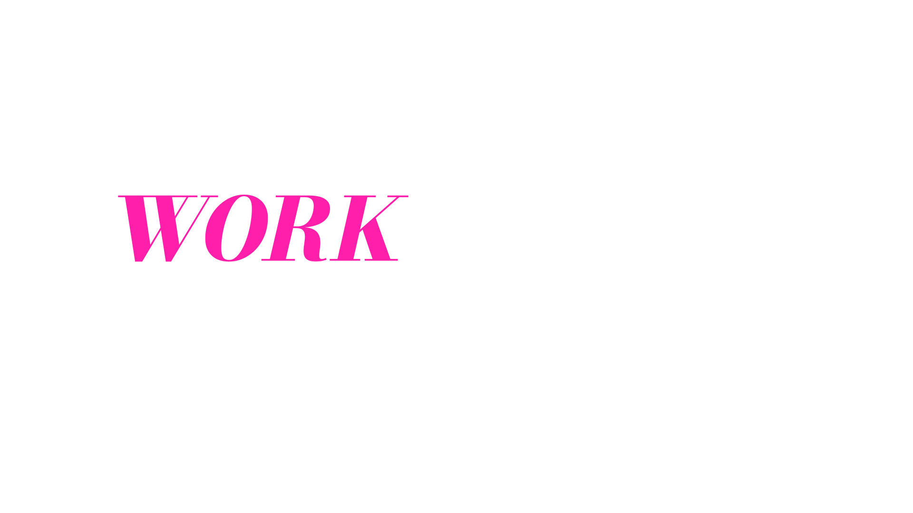
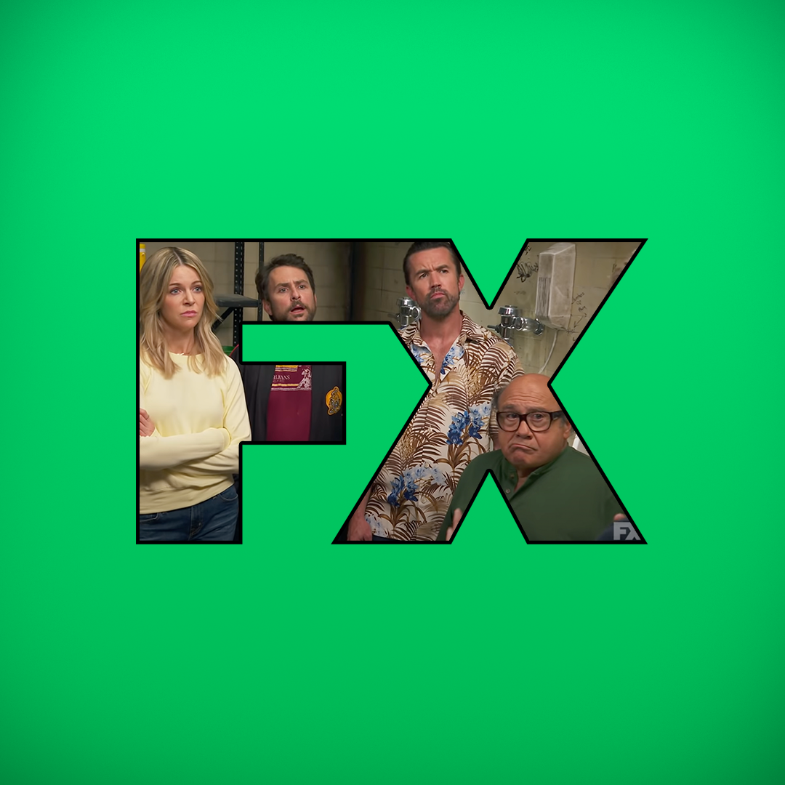
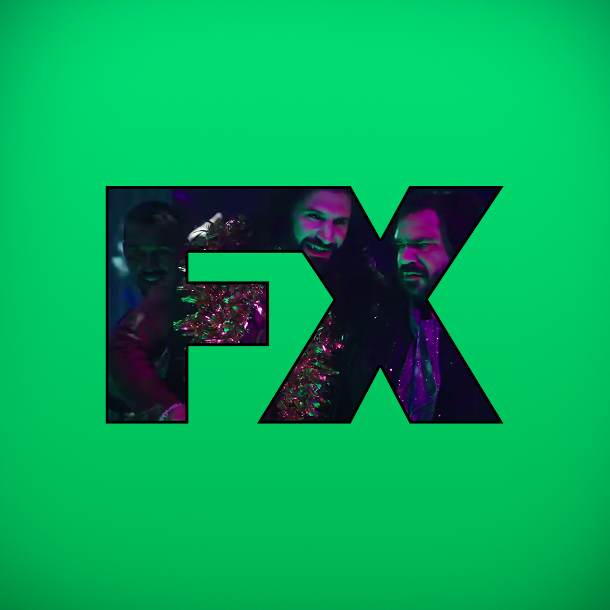
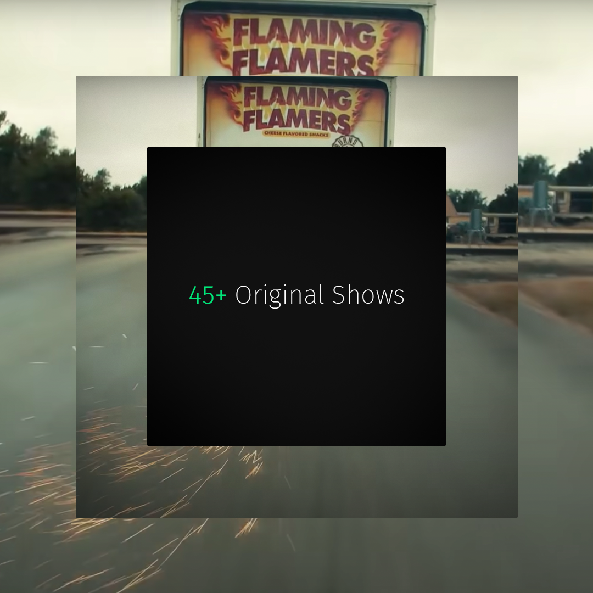
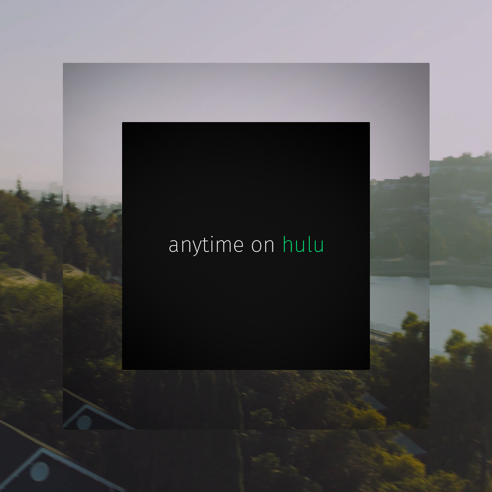
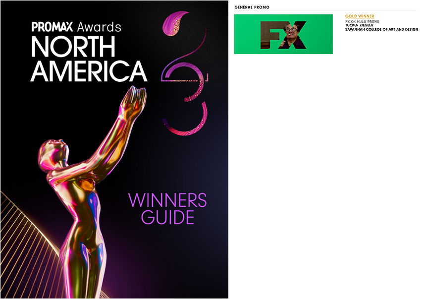

I'm the connection between imagination and execution,
turning sleek designs into dynamic animations that will
WOW even the most cynical of clients and creative directors.


loading





I'm the connection between imagination and execution,
turning sleek designs into dynamic animations that will
WOW even the most cynical of clients and creative directors.
Tenstorrent is building the future of AI hardware - and Developer Day was the stage to unveil it.
Please Call Me Champ Inc crafted a bold, future-rustic design and motion system to launch the platform with clarity and edge.Quick Cube is an ffx file for After Effects that turns a shape layer into an isometric cube with 3 axes of rotation.
Download Quick CubeQuick Cylinder is an ffx file for After Effects that turns a shape layer into an isometric cylinder with 2 axes of rotation, and a donut slider.
Download Quick CylinderQuick Cylinder v3 is a continuation of Quick Cylinder that adds cone and funnel controls. The final effect isn't as convincing, and needs a lot more math from me, but an early version is available for download to play with.
Download Quick Cylinder v3 (Experimental)



